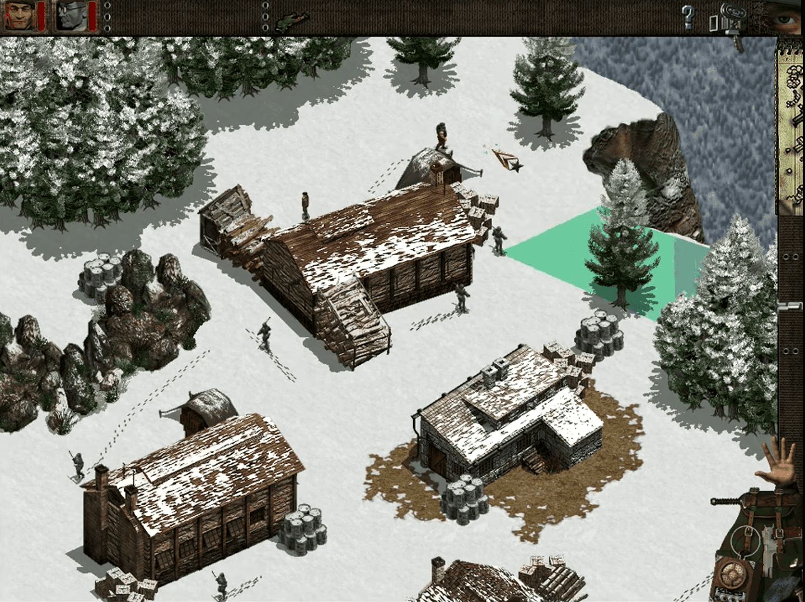

←Mision 1: Bautismo de Fuego→
Tu equipo de tres Commandos comienza separado entre sí y también del objetivo. Deben reunirse y luego cruzar el río hacia la isla donde se encuentra la torre de relé. Para hacer esto, necesitarán un bote. Un bote está ubicado en la isla central al este. El Marine debe matar silenciosamente a los tres guardias en esta isla, desinflar el bote y guardarlo en su mochila. Nada hacia el noreste cruzando el río, elimina silenciosamente a los dos soldados allí, luego dirígete al muelle en la isla suroeste para esperar a que los otros dos Commandos se unan a ti. Ahora debes llevar al Green Beret y al Conductor al bote. El primero está ubicado en el centro del mapa, cerca del borde sur, mientras que el segundo está en la esquina sureste. Ordena al Green Beret que elimine al guardia en el suroeste cuando esté alejándose. Sube sobre el muro usando el pico y mata al guardia junto a la casa cuando los otros dos guardias no estén mirando.
Lleva el cuerpo fuera de la vista y coloca el señuelo en medio del camino, cerca de la casa. Actívalo mientras te escondes detrás de la casa. Mientras los guardias estén distraídos con él, el Conductor debe subirse al camión y atropellarlos mientras conduce rápido. La costa está despejada, así que todos, ¡al bote! Rema hacia la isla del noroeste cruzando el río. Ocúltate detrás del edificio suroeste. Cuando la patrulla de tres soldados no esté mirando, haz que el Green Beret mueva un barril explosivo hacia la esquina noroeste del edificio y colócalo cerca del camino de la patrulla. Retrocede un poco, luego dispara al barril cuando la patrulla pase junto a él, haciéndolos explotar a todos. Mata al ametrallador y luego mueve otro barril hacia la estación de relé. Dispara para destruir el objetivo y la misión estará completa.
Mision 2: Una explosión silenciosa
Hay tres soldados en el lado oeste del río. La patrulla que hacen les permite apoyarse mutuamente, así que debes tener cuidado al eliminarlos. El mejor plan es eliminar primero al soldado del centro. Envía al Saboteador hacia el edificio al noroeste de tu posición inicial. Coloca la trampa cerca de la esquina, luego quédate escondido detrás del edificio. El soldado verá las huellas en la nieve y se acercará a investigar, con suerte, cayendo directamente en la trampa. Si no, el Green Beret tendrá que apuñalarlo. Rápidamente retira el cuerpo y mata a los otros dos soldados en silencio. Hay una lancha de patrulla que navega arriba y abajo del río, así que asegúrate de que todos tus hombres estén escondidos cuando pase. Antes de cruzar el río, debes asegurar el otro lado. Para hacer esto, el Francotirador debe disparar al soldado que patrulla la orilla del río al sureste del recinto, así como al soldado en la pared.
Espera hasta que la lancha de patrulla pase, luego el Marine puede remar dos de sus compañeros de equipo a la vez en el bote. El Green Beret debe trepar la pared y bajar la escalera para que el resto de los Commandos puedan entrar en el recinto. Si bien destruir los tanques de combustible puede no ser demasiado difícil, también debes asegurarte de que todos tus hombres estén a salvo. Mata a ambos soldados en el recinto silenciosamente y luego carga a todos los Commandos a bordo del camión, excepto al Saboteador. El Conductor debe mover el camión junto a la puerta. Asegúrate de que el Saboteador levante la puerta. Una vez que todo esté listo, el Saboteador debe colocar un explosivo junto a los tanques de combustible y otro en la esquina este, donde destruirá los barracones al otro lado del muro. Espera hasta que la patrulla en el exterior al este esté a mitad de camino a lo largo de su marcha hacia el norte. Esto los alejará de la ruta de escape cuando las explosiones ocurran. Rápidamente lleva al Saboteador al camión y conduce por el camino hacia el sureste. Sal del mapa una vez que los tanques de combustible estén en llamas.
Mision 3: Ingeniería Inversa
Solo para ingresar a esta misión, primero debes eliminar a seis soldados. Tu equipo comienza en el noreste. La parte más difícil es la patrulla de tres hombres. Coloca una trampa a lo largo de su camino, así como el señuelo del Green Beret. Después de que el primero sea asesinado por la trampa, activa el señuelo para distraer a los otros dos. Luego, el Marine debe moverse rápidamente para apuñalar a uno y luego disparar al otro con la pistola de arpón. Mata a los otros tres soldados en silencio y lleva al Marine hasta el borde del río. El Espía necesita un uniforme para infiltrarse en la estación de energía al otro lado del río. Uno está colocado en la cuerda de la ropa en el campamento al este. Es trabajo del Marine limpiar esta área de todos los soldados enemigos. Primero elimina a los tres del exterior y luego a los que están dentro del campamento. Debes matar a cada uno para que otros no te vean a ti o a los cuerpos y alerten. Una vez que todo esté claro, toma el bote fuera del campamento y rema para que el Espía consiga el uniforme. Lleva al resto del equipo a esperar en este campamento por ahora.
Rema al Espía hasta el lugar donde primero abordó el bote y déjalo. Envíalo a través de la presa y hacia la estación de energía para apagar la cerca eléctrica. Luego, debe dirigirse a la esquina sureste de la estación y matar al soldado allí. Esto despeja el camino para que el Marine traiga al resto del equipo a través del río, manteniéndose lo más al sur posible. El Saboteador puede cortar la cerca y dejar que él y el Green Beret entren mientras el Marine se encarga de los soldados a lo largo de la ribera. Debes usar al Espía para distraer a los soldados mientras el Green Beret mata a otros para limpiar toda la estación de energía y obtener los dos juegos de explosivos. Puedes dejar la patrulla en el noroeste, así como al ametrallador cerca de la presa, pero todos los demás deben morir. Antes de volar la presa, primero debes destruir el bunker que la cubre. Con el Marine y el Green Beret en el bote cercano, el Saboteador coloca la primera carga detrás del bunker y luego corre hacia el bote. Rema hacia el otro lado del río y espera. Sonará una alarma y refuerzos saldrán de los cuarteles. Sin embargo, espera a que miren hacia otro lado o utiliza al Espía para distraerlos. Luego, rema al Saboteador hasta la base de la presa y coloca el segundo juego de explosivos. Rema hacia el lado este del río y saca a todos del bote. El Espía puede luego cruzar la presa, incluso después de que esté dañada, hasta un camión esperando. Súbete todos a bordo y el camión los llevará a un lugar seguro.
Mision 4: Restaurar el orgullo
Tu equipo de Commandos comienza en la esquina suroeste del mapa. Hay 23 soldados enemigos en este lado del fiordo, todos los cuales deben ser eliminados antes de cruzar el puente. Sin embargo, si puedes llevar al Conductor al tanque, esto facilitará mucho esta fase. El Green Beret puede encargarse de la mayoría de los soldados al suroeste de los vagones de tren. Luego, haz que el Saboteador lance una granada para eliminar la patrulla de tres y cualquier otro que venga a investigar. Recuerda guardar una granada para la fase final. Debes deshacerte del soldado al otro lado del puente. Si te ve, se subirá a su motocicleta y correrá en busca de refuerzos. Dispárale con el Francotirador y luego haz que el Green Beret esconda el cuerpo junto a los árboles cercanos. Lleva al resto de tu equipo al otro lado del puente. El Green Beret, junto con el Saboteador y su trampa, pueden limpiar a los soldados restantes en el sureste. Los suministros han sido lanzados en paracaídas en el borde oriental del mapa. Espera a que pase la patrulla antes de enviar al Conductor a recoger la ametralladora y derribar a los tres hombres.
Obtén los explosivos y balas para el rifle de francotirador. También necesitarás un camión. Cuando uno se detenga en el cruce del ferrocarril, mata al conductor y tómalo. Luego, el Francotirador debe eliminar a los tres soldados restantes fuera de las paredes de la sede. Cuando la patrulla entre los dos muros esté alejándose, haz que todos tus Commandos, excepto el Conductor, entren sigilosamente para esconderse detrás del edificio en el norte. Luego, estaciona el camión en la puerta del muro interior. Saca al conductor y hazlo explotar con una granada. Esto evitará que los refuerzos entren al patio interior. Mata a todos los soldados alrededor de la sede y luego hazla explotar. Finalmente, debes enviar a todos tus hombres al bote de patrulla en el muelle, que los llevará a un lugar seguro.
Mision 5: Justicia ciega
Tus dos Commandos comienzan en el noroeste. El Green Beret debe matar silenciosamente a los soldados en el área inmediata y abrir un camino hasta la cabina telefónica en el sur. Luego puede usar el teléfono para distraer al soldado cerca de la cuerda de la ropa, dándole al Espía la oportunidad de obtener el uniforme y ponérselo. Luego, elimina al resto de los enemigos en la base de la montaña excepto por las dos patrullas. Usa al Espía para distraer mientras el Green Beret usa el cuchillo. Ahora que el área alrededor del teleférico está despejada, envía al Espía hacia arriba de la montaña mientras el Green Beret se esconde cerca de la estación inferior. El espía debe matar al soldado en la estación superior. Luego, administra inyecciones letales a los otros dos soldados que simplemente están de pie. Oculta sus cuerpos detrás de los cuarteles, fuera de la vista de la patrulla. Regresa en el teleférico y recoge al Green Beret. Espera hasta que la patrulla cerca de la cuerda de la ropa esté alejándose antes de dirigirte nuevamente hacia arriba de la montaña. Pueden ver al Green Beret en el teleférico y comenzarán a disparar.
En la cima, el Espía distrae a la patrulla mientras el Green Beret se esconde en la nieve. Luego, el Espía debe matar al soldado en la parte superior del mapa mientras la patrulla se dirige al sur, luego correr rápidamente tras la patrulla y distraerlos para que sigan mirando hacia el sur, justo pasado los cuarteles. Ahora el Green Beret debe colocar un barril junto a la esquina oeste de los cuarteles y otro cerca del radar. Coloca un tercero entre los dos, luego escóndete en la nieve cerca del autogiro. Cuando la patrulla pase junto al barril cerca de los cuarteles, el Espía lo dispara. Esto destruirá los cuarteles y matará a la patrulla al mismo tiempo. Si llegan refuerzos, mátalos ya que estarán junto a los barriles. Finalmente, dispara al barril cerca del radar para hacerlo explotar y luego sube a ambos Commandos al autogiro que los llevará a un lugar seguro.
Mision 6: La Amenaza del Leopold
Tus tres Commandos comienzan en el noroeste. Sin embargo, solo necesitarás al Green Beret para esta fase. Mata al soldado cerca de tu posición de inicio, luego al que está en la esquina oeste del edificio escalando la pared. Baja de nuevo y vuelve al edificio bombardeado por la escalera del lado este. Elimina a todos los enemigos dentro del edificio, así como en el área circundante, para un total de diez muertes en esta fase. Ahora el Green Beret debe eliminar a los dos soldados cerca de las tiendas. Mantente en silencio y cuidado con el vehículo semioruga que patrulla. Haz entrar al resto del equipo en acción. El Saboteador debe colocar un explosivo de control remoto en el camino del semioruga, en el punto más al norte. Posiciona al francotirador cerca del edificio, a lo largo de la carretera. Detona el explosivo cuando el vehículo pase sobre él. Algunos soldados vendrán a investigar. El francotirador puede eliminarlos, pero asegúrate de guardar dos balas para más adelante en la misión. Con el área occidental despejada, mueve al francotirador hacia el borde sur del mapa. Mata al soldado en el techo de la sede, así como al que está detrás de la HQ, junto a los vagones del ferrocarril. Envía al Green Beret para eliminar a los soldados restantes en el área del campamento, teniendo cuidado de evitar los ojos vigilantes de la patrulla al noroeste.
Antes de colocar tus explosivos, primero debes despejar un camino para tu escape. Mientras observas la patrulla, mata a todos los soldados en la parte norte del mapa cerca de los rieles y en el área nevada. Luego lleva a todos tus Commandos junto al cañón, escondiéndote en el lado norte. Todavía tienes que eliminar a otros cuatro enemigos antes de poder detonar los explosivos. Mata a los tres que están en el edificio cercano, seguido por el ametrallador. El Saboteador debe plantar el último explosivo junto al cañón. Lleva a todo el equipo al otro lado del edificio y detona el explosivo. Un camión se acercará para recoger a tus hombres. Súbelos y los llevará a un lugar seguro.
Mision 7: Persecución de los Lobos
Tus Commandos comienzan separados en dos equipos. El Green Beret y el Marine comienzan al norte de un pueblo pesquero. Mata a los dos soldados individuales y a la patrulla. La mejor manera de lidiar con la patrulla es con el Marine. Mientras se alejan, corre detrás de ellos y apuñala al soldado trasero. Luego, antes de que el otro pueda responder, saca la pistola de arpón y dispárale. Ahora tus dos Commandos deben despejar el pueblo y conseguir el bote. La mayoría de ellos pueden ser eliminados uno por uno. Sin embargo, cerca de los cuarteles hay una patrulla. Después de matar a los soldados individuales en el área, introduce sigilosamente al Green Beret en el pueblo y coloca un barril explosivo cerca de la puerta de los cuarteles. Dispara con la pistola mientras la patrulla pasa para matarlos junto con cualquier refuerzo. Rápidamente escóndete, ya que un par de soldados del suroeste vendrán a investigar. Mátalos antes de que puedan regresar a sus puestos. Con los cuarteles destruidos, puedes usar pistolas si es necesario. Elimina a cualquier soldado restante cerca del bote, luego envía al Green Beret con un barril explosivo para acabar con la patrulla cerca del faro. Los otros tres Commandos comienzan en el noroeste. Lo primero que deben hacer es conseguir un uniforme para el Espía. Espera hasta que el soldado cerca de la cuerda de la ropa se esté alejando, luego corre y póntelo. Cuando el enemigo se dé la vuelta, verá a un oficial alemán en lugar de un Commando. Luego usa al Espía para distraer a la patrulla en el noroeste para que el Saboteador pueda recuperar los explosivos.

En esta fase, aunque no es difícil, requiere mucha espera, coordinación y llevar cuerpos muertos. El Espía debe matar a todos los soldados individuales aquí, comenzando por el que está cerca de la cuerda de la ropa. Mata al que patrulla cerca del centro mientras el Green Beret distrae al que está en la esquina este con el señuelo. Después de cada muerte, lleva el cuerpo a través de la puerta y deposítalo cerca de la puerta del edificio al este de la misma. Una vez que hayas matado a cuatro de los soldados individuales, mata al quinto junto al agua cuando la patrulla se dirige al sureste. Luego corre rápidamente para distraer a la patrulla cerca del arma al final del recinto mientras el Conductor y el Saboteador entran por la puerta. El Saboteador debe plantar explosivos cerca de las dos armas, primero en el oeste, y luego subirse al semioruga con el conductor. El Conductor puede usar la ametralladora para matar a la patrulla y a todos los refuerzos de los cuarteles. Cuando todo esté claro, el Green Beret y el Marine deben remar hasta la rampa, recoger al resto del equipo y llevar al Saboteador a la plataforma entre los dos submarinos. Coloca los explosivos cerca de la popa de los submarinos, cerca de los torpedos, y luego escapa en el bote.
Mision 8: Pirotecnia
Esta es una misión difícil, pero no imposible. Tu equipo comienza rodeado. El Green Beret se encargará de la mayoría de los soldados aquí. El señuelo será de gran ayuda. Mata a todos en la meseta excepto al artillero en el extremo este. Guárdalo para más tarde. Cuando mates a los dos soldados cerca de la rampa hacia abajo, ten cuidado de no ser visto por ninguno de los soldados debajo. Ahora saca al Francotirador. Dispara al soldado cerca de los barriles en la parte más occidental de su patrulla, para que su cuerpo quede fuera de vista. Mata al resto de los enemigos cerca de las tiendas y luego haz que el Francotirador dispare al soldado en la cima de los cuarteles cuando los soldados en los tanques de combustible no estén mirando. Termina la fase eliminando al resto de los soldados en el suroeste. Antes de hacer una muerte, asegúrate de que nadie más pueda verte durante la acción.
Ahora el Francotirador debe disparar al soldado que está junto al muro, al lado de la carretera, al sur del cañón en la meseta. Luego, esconde al Francotirador cerca del borde occidental del mapa. Cuando uno de los soldados en el depósito vaya a investigar, mátalo con el Green Beret. Elimina al resto de los guardias dentro del depósito y luego coloca los barriles explosivos como se ilustra para poder provocar una reacción en cadena desde fuera del depósito que destruirá todos los objetivos. Envía al Francotirador a esconderse junto al muro cerca de la carretera donde está el cuerpo del soldado que disparó. Luego, lleva al Green Beret a la meseta para colocar un barril explosivo junto al cañón. Todo sucede muy rápido. Cuando el soldado en el puente esté en el extremo este, haz explotar el cañón y mueve al Green Beret por el lado del acantilado con el pico. Cuando el soldado del puente pase corriendo junto al Francotirador, dispárale con la pistola. Luego mata también al ametrallador con la pistola. Finalmente, dispara al barril junto al depósito de agua para provocar la cadena de explosiones. Un jeep llegará para recoger a tu equipo cuando se haya cumplido la misión.
Mision 9: Llamada de cortesía
Esta misión es bastante fácil y un buen descanso después de la anterior. El Green Beret, el Francotirador y el Saboteador comienzan en el sur, mientras que los otros dos Commandos están en el norte. Afortunadamente, tu Espía guardó el uniforme alemán de su última misión. Envíalo a través de la puerta este y a través del patio para matar a los tres soldados en el recinto vallado occidental con veneno. Luego, ingresa a la base y envenena al soldado cerca del bunker y oculta el cuerpo detrás de él. Haz lo mismo con el soldado que patrulla cerca del bunker. Luego mata a los dos soldados cerca de la puerta este y oculta los cuerpos fuera de las paredes. Mientras el Espía distrae a la patrulla, haz que los tres Commandos del sur se apresuren hacia la armería. Mata a los dos últimos soldados individuales, luego lleva al Conductor a la base. Estaciona el camión de combustible justo frente al tanque central, mientras que el Saboteador coloca sus explosivos cerca del bunker y los cuarteles.
Coloca la trampa en el centro de la puerta este para reducir la patrulla exterior cuando entre en la base. El Green Beret debe colocar barriles explosivos junto a los otros tres edificios y la antena (dentro de los sacos de arena). Oculta a todos los Commandos, excepto al Espía, en los edificios cerca del camión.El Espía puede terminar su conversación y disparar al barril cerca del edificio de comunicaciones cuando pase la patrulla. El Saboteador debe detonar ambos explosivos y el camión de combustible explotará automáticamente. Usa al Francotirador para matar a las patrullas exteriores cuando entren en la base. Cuando todo se haya calmado, haz que todos suban al camión y escapen por la puerta oeste.
Mision 10: Operación Icaro
Tu equipo comienza en el oeste donde deben matar a cuatro soldados y una patrulla. Usa una granada en la patrulla. También puedes usar armas de fuego libremente en esta área. Esta fase es difícil. Debes matar al soldado fuera del muro y colocar el señuelo fuera de la esquina sur. Úsalo para distraer al guardia cercano mientras el Green Beret escala el muro al norte de la puerta y mata al soldado que patrulla cerca del área de detención. Mata a los otros tres soldados en esta parte de la base y oculta los cuerpos junto a la armería. Usa al Francotirador para matar al soldado en la esquina norte cerca de las tiendas. Luego, el Green Beret puede apuñalar a los otros dos soldados. Luego, mata al soldado al este, cerca de los cuarteles cuando la patrulla no esté mirando. Deja el cuerpo y ponte en posición de prono. Envía a otro Commando a liberar al piloto del área de detención y ocúltalos a todos en la armería.
Utiliza al Francotirador y al Green Beret para eliminar a los soldados individuales restantes en el área. El Francotirador debe disparar desde una posición al sur de la pared de la base y a través del espacio entre los dos cobertizos de los tanques. Oculta los cuerpos de la patrulla y saca al Saboteador y al Conductor mientras los otros Commandos se esconden en la armería. Mientras el Saboteador se mueve entre los dos cobertizos de los tanques en el oeste, el Conductor espera detrás de la pared cerca del tanque vacío en el sur. Cuando la patrulla se dirige hacia el norte, el Saboteador debe lanzar rápidamente una granada en cada uno de los cobertizos cercanos para destruir los tanques en su interior, luego correr hacia el tanque vacío junto con el Conductor. Uno de los dos tanques restantes vendrá hacia ti mientras el otro se dirige hacia el aeródromo. Dispara al primer tanque con el cañón principal y mata a la patrulla y a cualquier refuerzo que salga de los cuarteles. Cuando la base esté despejada, carga al resto del equipo y al piloto a bordo del tanque y dirígete al aeródromo. Destruye el último tanque y cualquier oposición que encuentres en el camino. Usa el tanque para eliminar a todos los refuerzos de los cuarteles cerca del aeródromo. Cuando todo esté claro, destruye los dos Stukas y lleva a todos a bordo del avión que los llevará a salvo.